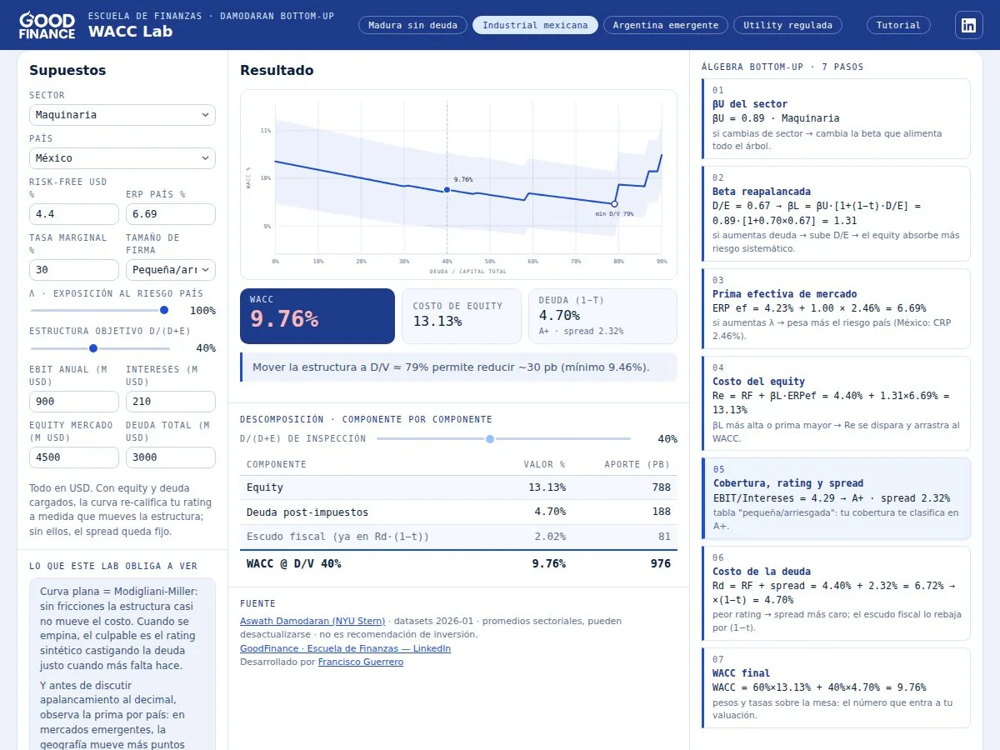
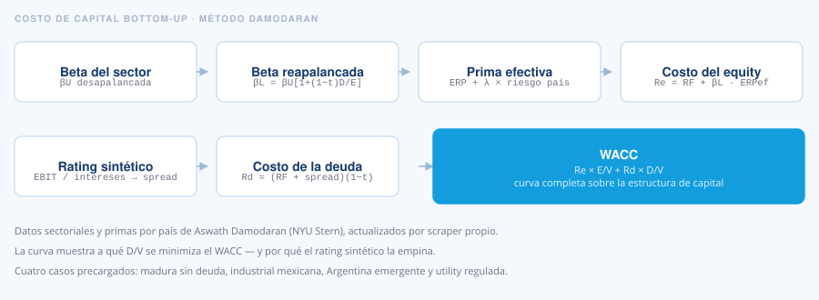
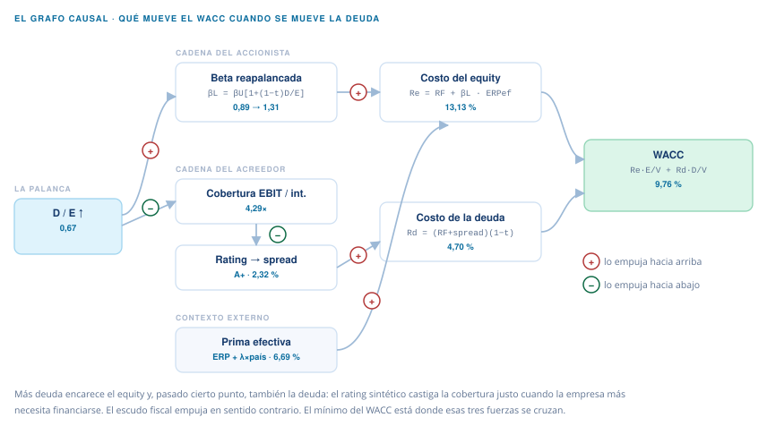
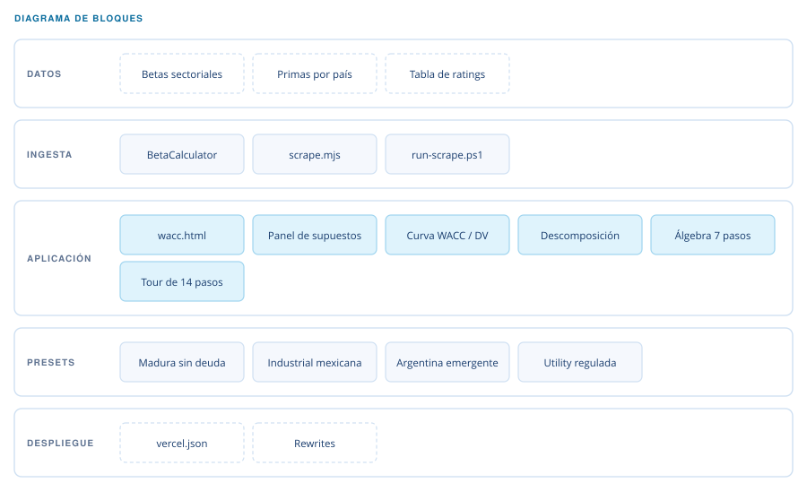

Laboratorio de Costo de Capital Good Finance
Calculadora de costo de capital bottom-up con el método de Damodaran.

Qué es
Se elige sector y país, se mueve la estructura objetivo y la curva del WACC se recalcula en vivo, con el álgebra completa desglosada en siete pasos al costado.
El concepto. Casi nadie ve por qué el WACC se mueve. El lab lo obliga: si la curva sale plana, eso es Modigliani-Miller —sin fricciones la estructura casi no mueve el costo—; cuando se empina, el culpable es el rating sintético, que encarece la deuda justo cuando más falta hace. Y antes de discutir apalancamiento al decimal, muestra que en mercados emergentes la prima por país mueve más puntos que la estructura.
- HTML y SVG
- JavaScript
- Node.js
- Vercel
Cómo funciona
Cada paso alimenta al siguiente y se muestra en pantalla con su fórmula y su número. Al mover un supuesto se ve exactamente qué eslabón de la cadena cambió y cuánto arrastró al resto.

Por qué se mueve el WACC
La cadena de siete pasos dice cómo se calcula. No dice por qué la curva tiene la forma que tiene. Eso lo decide una tensión: subir la deuda recorre dos caminos a la vez, y los dos empujan el costo hacia arriba.

Por la cadena del accionista, más deuda significa más riesgo sistemático sobre el equity: la beta se reapalanca de 0,89 a 1,31 y el costo del equity se va a 13,13 %. Por la cadena del acreedor, la misma deuda reduce la cobertura de intereses, el rating sintético la castiga y el spread se ensancha. El escudo fiscal empuja en sentido contrario, y el mínimo del WACC está donde esas tres fuerzas se cruzan.
Lo que este grafo obliga a ver. Cuando la curva sale plana, no hay fricciones que valgan y la estructura casi no importa: eso es Modigliani-Miller. Cuando se empina, el culpable tiene nombre —el rating— y encarece la deuda justo en el tramo en que la empresa más la necesita.
Cómo está compuesto
El scraper alimenta al HTML, y el HTML se basta solo a partir de ahí.

Un solo archivo
Toda la aplicación vive en wacc.html: sin build, sin framework.
Scraper propio
Lee las tablas de Damodaran y las incrusta en el HTML.
Rating sintético
La cobertura EBIT/intereses clasifica y define el spread.
Cuatro casos
Presets que cargan escenarios completos para arrancar.